The operational decision
A dashboard shows an overdue order. An analyst still has to find the sellers involved, find related late orders, count them without double counting multi-seller orders, attribute money to the right seller's lines, separate facts from guesses, and get an independent reviewer to approve opening an internal investigation.
Whether to open an evidence-supported internal investigation. Never refunds, blame, customer contact, or edits to commerce records.
Authorization before every join, exact counts and centavo totals by code, no model arithmetic, no causal claims, and a reviewer who is not the proposer.
Full Olist Brazilian e-commerce dataset (99,441 orders, CC BY-NC-SA 4.0) plus a clearly labelled synthetic carrier and disruption scenario.
Measured results
Every number comes from a recorded run. The frozen 60-question benchmark compares a deterministic SQL workspace (B0), a flat-evidence AI assistant (B1), and the ontology-assisted candidate, across two Amazon Nova models and two modes.
Benchmark of record (gold-v1, frozen) · selected cells
| Comparator | Model | Mode | Task success | Precision | Recall | Causal rejections |
|---|---|---|---|---|---|---|
| B0 deterministic | none | both | 1.000 | 1.000 | 1.000 | 0 |
| Candidate (typed ontology) | Nova 2 Lite | real only | 0.581 | 1.000 | 0.114 | 0 |
| Candidate (typed ontology) | Nova Lite | scenario | 0.467 | 1.000 | 0.491 | 10 |
| B1 flat evidence | Nova 2 Lite | real only | 0.558 | 1.000 | 0.123 | 0 |
| B1 flat evidence | Nova Lite | scenario | 0.250 | 1.000 | 0.528 | 12 |
Full table, per-category results, costs, and limitations: results.md. Raw run: report.json.
AWS architecture
Seven architecture diagrams drawn from the deployed CDK stack (one stack, 84 resources, all tagged), plus six system-design diagrams below. Click any diagram for the full-resolution SVG; each has an editable draw.io source using the official AWS icon set.

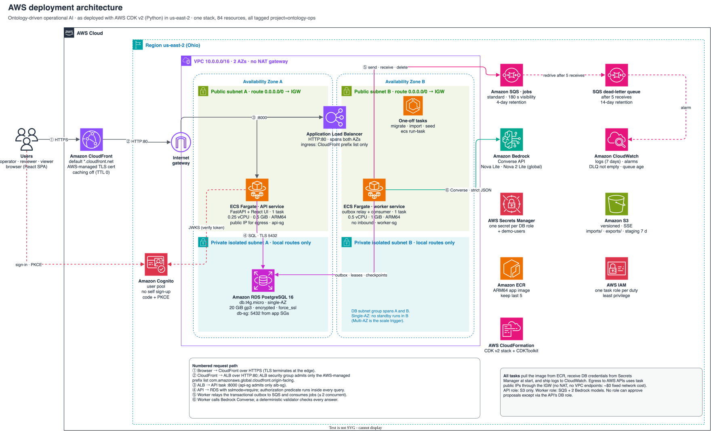

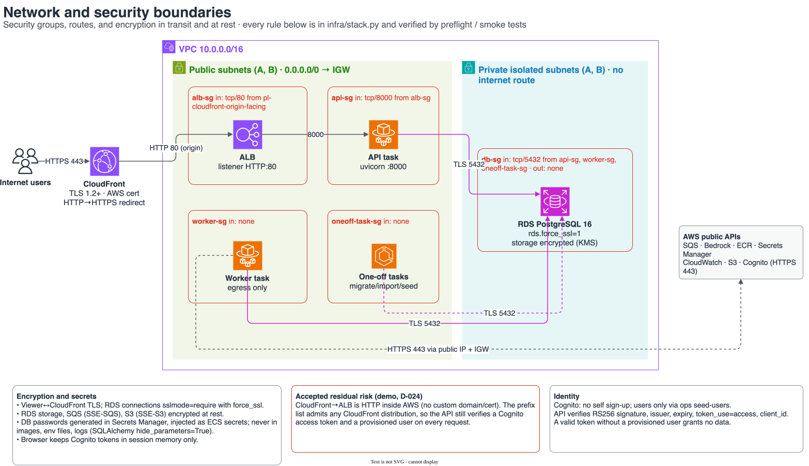

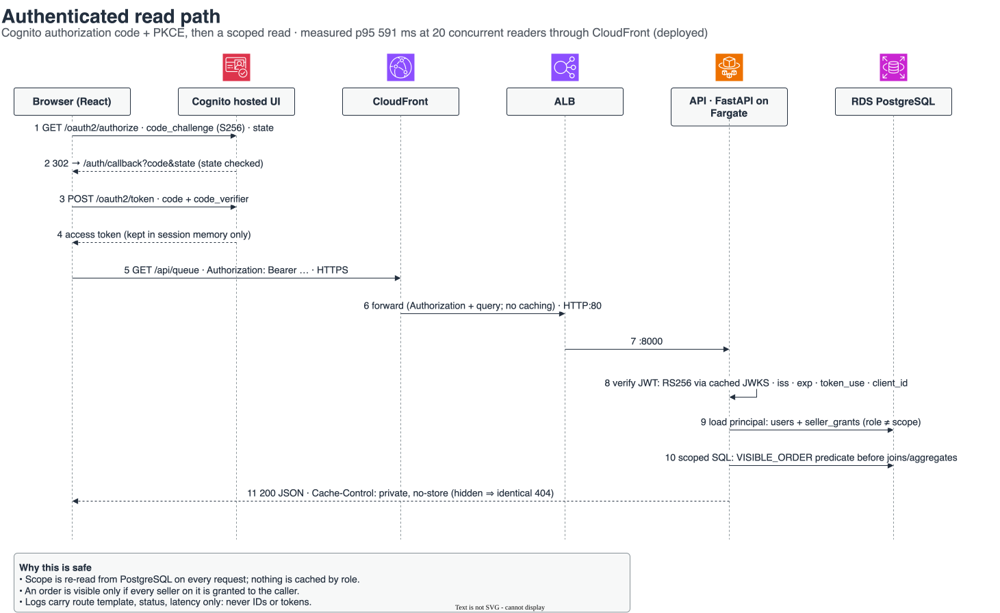

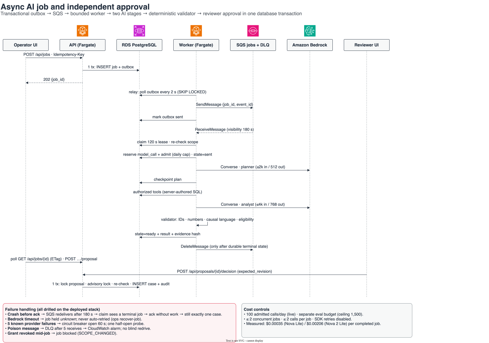

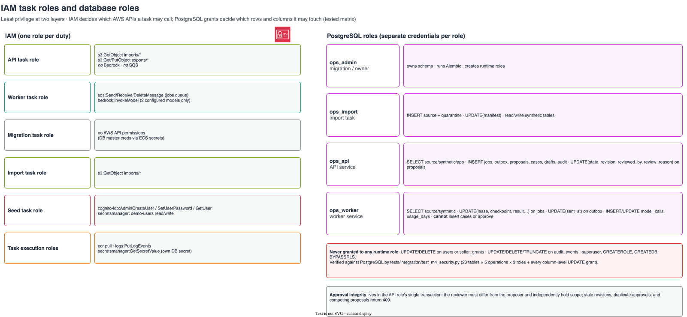

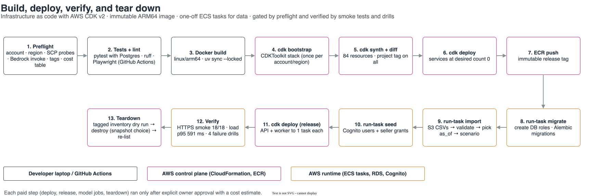

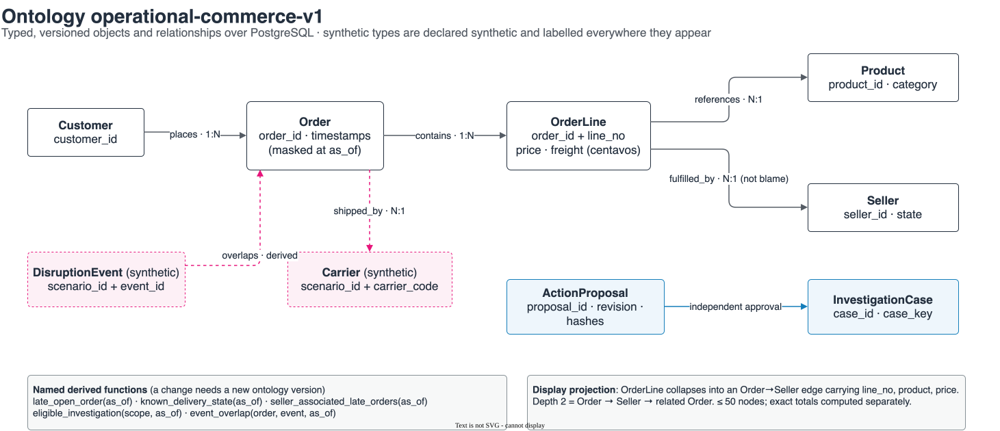
AWS design decisions worth noting
- No NAT gateway. Fargate tasks use public IPs for egress, with inbound locked by security groups, cutting the largest fixed network cost for a single-task service.
- CloudFront in front of the ALB provides HTTPS on an AWS-managed domain without a custom domain or certificate; the ALB admits only CloudFront's origin-facing prefix list.
- Transactional outbox plus SQS gives at-least-once delivery without dual writes; consumers are idempotent through leases and checkpoints, proven by a live crash-and-redelivery drill.
- Paid-call admission is durable: each model call is reserved in PostgreSQL before it is sent, SDK retries are disabled, and an unknown outcome is held rather than retried.
- Separate IAM role and database role per duty. The worker can call Bedrock but cannot approve; the API can approve but cannot call Bedrock.
- Region us-east-2 because the account's organization SCP permits these services only there; this was diagnosed with read-only probes and recorded as a decision.
- Estimated run rate about $74/month from AWS Price List API rates; the stack was torn down after the demo.
System design: six workload scenarios
Each workload from the specification maps to a built mechanism, measured evidence, and a recorded scale trigger for the service deliberately not built yet. Full write-up: system-design.md.
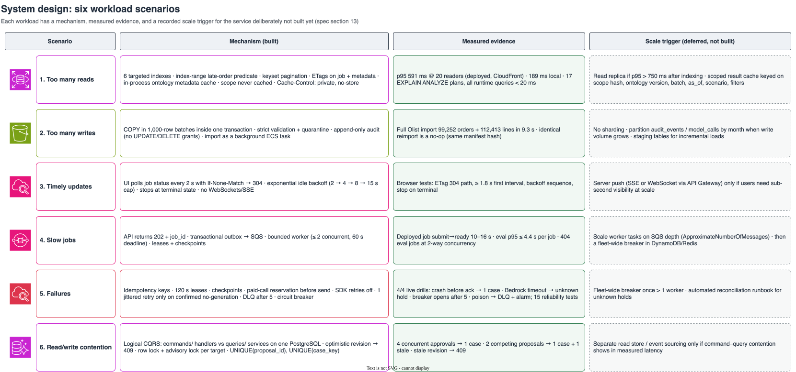

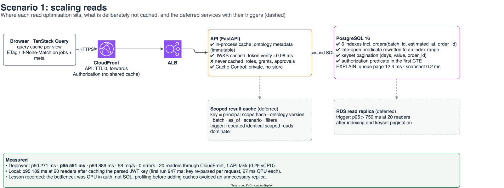

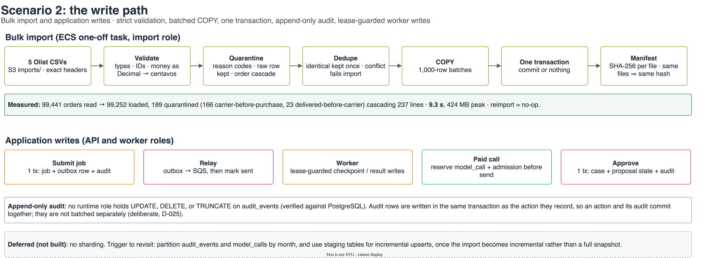

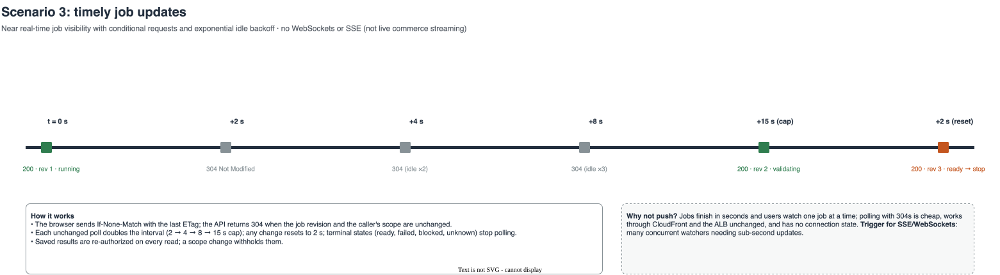

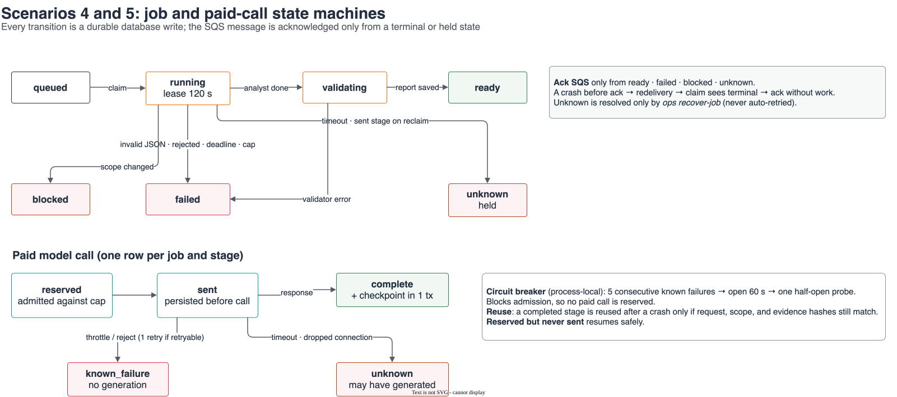

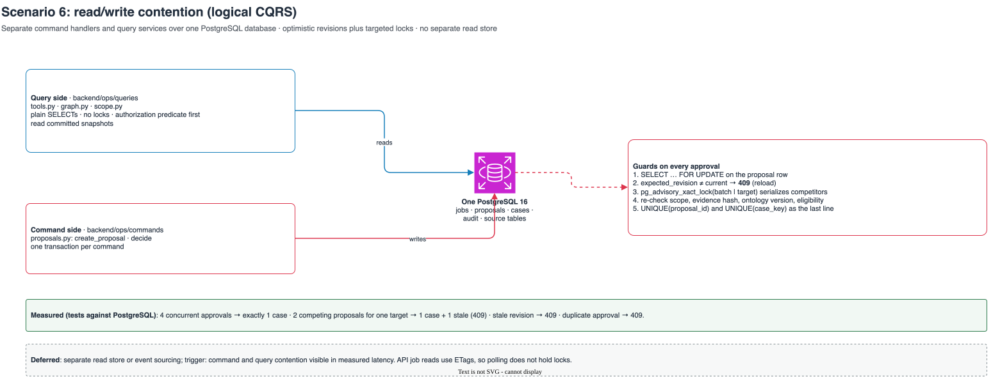
Try it (no backend, no credentials)
Both apps run entirely in your browser on authored fixture data. All actions are simulations and the apps make zero API requests, verified by Playwright tests.
Explore the queue, the relationship graph, a simulated job and proposal, and a simulated independent approval.
The same interface replaying measured, authored evidence, with synthetic-scenario and authored labels shown.
Documentation
The full build specification.
Owner decisions and deviations, D-001 to D-024.
Types, relationships, and derived functions.
Six workload scenarios: mechanism, evidence, scale trigger.
Measured evaluation, latency, cost, and limitations.
Assumptions versus measured inputs, and the decision.
M1 to M6 checks, commands, incidents, and hours.